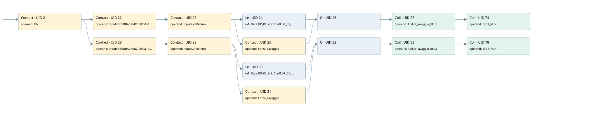

enabling sleeve washing
filter · 검색 색인 순서 5 · 원본 내부 NID 추정 29
백업 PLF 원본의 2757634 바이트 위치에서 복원한 XML. 검색 문서 1886의 객체 키 161022008e54000000000000와 연결했다. 이름 해석 15/15개. 남은 RefId는 상수 또는 미해석 참조다.
연결 구조 다시 그리기
원본 Part/PCon/Wire를 이용한 연결도다. TIA 화면의 래더 배치 또는 실행 결과를 재현한 그림은 아니다. 핀 연결은 아래 표와 원본 XML을 기준으로 읽는다. 노드 위에 마우스를 두면 피연산자 이름을 볼 수 있다.

접점·코일·블록과 피연산자
| Part UID | Gate | Negated 핀 | 연결 피연산자 |
|---|---|---|---|
| 21 | Contact | operand = ON | |
| 22 | Contact | operand = Inputs.FEEDBACKMOTOR SC-10 | |
| 23 | Contact | operand = Inputs.VR04 Run | |
| 24 | Le | in1 = Data.DP_01; in2 = Coeff.DP_01_SOGLIA_1 | |
| 25 | Contact | operand = Forza_Lavaggio | |
| 26 | O | ||
| 27 | Coil | operand = Abilita_lavaggio_BF01 | |
| 74 | Coil | operand = BF01_RUN | |
| 28 | Contact | operand = Inputs.FEEDBACKMOTOR SC-11 | |
| 29 | Contact | operand = Inputs.VR05 Run | |
| 30 | Le | in1 = Data.DP_02; in2 = Coeff.DP_01_SOGLIA_1 | |
| 31 | Contact | operand = Forza_Lavaggio | |
| 32 | O | ||
| 33 | Coil | operand = Abilita_lavaggio_BF02 | |
| 78 | Coil | operand = BF02_RUN |
접점 경로를 펼친 조건식
Contact·O/A·비교기의 원본 연결을 읽기 쉽게 펼친 보조 해석이다. POWER는 전원 레일 시작을 뜻한다. 호출 블록·에지·타이머의 내부 동작과 다중 쓰기 순서는 이 표로 실행 검증하지 않았다. 미해석 핀과 RefId는 원문 연결표에서 확인한다.
| UID | 동작 | 대상 | 원본 접점 경로 | 내용 |
|---|---|---|---|---|
| 27 | Coil | Abilita_lavaggio_BF01 | ((((ON AND Inputs.FEEDBACKMOTOR SC-10) AND Inputs.VR04 Run) AND [Data.DP_01 <= Coeff.DP_01_SOGLIA_1]) OR (((ON AND Inputs.FEEDBACKMOTOR SC-10) AND Inputs.VR04 Run) AND Forza_Lavaggio)) | 조건에 따른 Coil 기록 |
| 74 | Coil | BF01_RUN | Coil UID 27.out (블록 동작 확인) | 조건에 따른 Coil 기록 |
| 33 | Coil | Abilita_lavaggio_BF02 | ((((ON AND Inputs.FEEDBACKMOTOR SC-11) AND Inputs.VR05 Run) AND [Data.DP_02 <= Coeff.DP_01_SOGLIA_1]) OR (((ON AND Inputs.FEEDBACKMOTOR SC-11) AND Inputs.VR05 Run) AND Forza_Lavaggio)) | 조건에 따른 Coil 기록 |
| 78 | Coil | BF02_RUN | Coil UID 33.out (블록 동작 확인) | 조건에 따른 Coil 기록 |
원본 배선 연결
| Wire UID | 동일 Wire 연결 끝점 |
|---|---|
| 47 | Powerrail {} ↔ Part 21.in |
| 48 | ORef 34 (ON) ↔ Part 21.operand |
| 49 | Part 21.out ↔ Part 22.in ↔ Part 28.in |
| 50 | ORef 35 (Inputs.FEEDBACKMOTOR SC-10) ↔ Part 22.operand |
| 51 | Part 22.out ↔ Part 23.in |
| 52 | ORef 36 (Inputs.VR04 Run) ↔ Part 23.operand |
| 53 | Part 23.out ↔ Part 24.pre ↔ Part 25.in |
| 54 | ORef 37 (Data.DP_01) ↔ Part 24.in1 |
| 55 | ORef 38 (Coeff.DP_01_SOGLIA_1) ↔ Part 24.in2 |
| 56 | Part 24.out ↔ Part 26.in1 |
| 57 | ORef 39 (Forza_Lavaggio) ↔ Part 25.operand |
| 58 | Part 25.out ↔ Part 26.in2 |
| 59 | Part 26.out ↔ Part 27.in |
| 60 | ORef 40 (Abilita_lavaggio_BF01) ↔ Part 27.operand |
| 72 | Part 27.out ↔ Part 74.in |
| 73 | ORef 75 (BF01_RUN) ↔ Part 74.operand |
| 61 | ORef 41 (Inputs.FEEDBACKMOTOR SC-11) ↔ Part 28.operand |
| 62 | Part 28.out ↔ Part 29.in |
| 63 | ORef 42 (Inputs.VR05 Run) ↔ Part 29.operand |
| 64 | Part 29.out ↔ Part 30.pre ↔ Part 31.in |
| 65 | ORef 43 (Data.DP_02) ↔ Part 30.in1 |
| 66 | ORef 44 (Coeff.DP_01_SOGLIA_1) ↔ Part 30.in2 |
| 67 | Part 30.out ↔ Part 32.in1 |
| 68 | ORef 45 (Forza_Lavaggio) ↔ Part 31.operand |
| 69 | Part 31.out ↔ Part 32.in2 |
| 70 | Part 32.out ↔ Part 33.in |
| 71 | ORef 46 (Abilita_lavaggio_BF02) ↔ Part 33.operand |
| 76 | Part 33.out ↔ Part 78.in |
| 77 | ORef 79 (BF02_RUN) ↔ Part 78.operand |
식별자 해석 근거 15개
| ORef UID | RefId | 이름 | IdentXmlPart 파일 | 해석 방법 |
|---|---|---|---|---|
| 34 | 52 | ON | 0594-IdentXmlPart.xml | UID/RID + search-text + NID agreement |
| 35 | 304 | Inputs.FEEDBACKMOTOR SC-10 | 0596-IdentXmlPart.xml | UID/RID + search-text + NID agreement |
| 36 | 318 | Inputs.VR04 Run | 0596-IdentXmlPart.xml | UID/RID + search-text + NID agreement |
| 37 | 6 | Data.DP_01 | 0596-IdentXmlPart.xml | UID/RID + search-text + NID agreement |
| 38 | 8 | Coeff.DP_01_SOGLIA_1 | 0596-IdentXmlPart.xml | UID/RID + search-text + NID agreement |
| 39 | 57 | Forza_Lavaggio | 0598-IdentXmlPart.xml | UID/RID + search-text + NID agreement |
| 40 | 63 | Abilita_lavaggio_BF01 | 0598-IdentXmlPart.xml | UID/RID + search-text + NID agreement |
| 75 | 341 | BF01_RUN | 0594-IdentXmlPart.xml | UID/RID + search-text + NID agreement |
| 41 | 305 | Inputs.FEEDBACKMOTOR SC-11 | 0596-IdentXmlPart.xml | UID/RID + search-text + NID agreement |
| 42 | 319 | Inputs.VR05 Run | 0596-IdentXmlPart.xml | UID/RID + search-text + NID agreement |
| 43 | 31 | Data.DP_02 | 0596-IdentXmlPart.xml | UID/RID + search-text + NID agreement |
| 44 | 8 | Coeff.DP_01_SOGLIA_1 | 0596-IdentXmlPart.xml | UID/RID + search-text + NID agreement |
| 45 | 57 | Forza_Lavaggio | 0598-IdentXmlPart.xml | UID/RID + search-text + NID agreement |
| 46 | 65 | Abilita_lavaggio_BF02 | 0598-IdentXmlPart.xml | UID/RID + search-text + NID agreement |
| 79 | 344 | BF02_RUN | 0594-IdentXmlPart.xml | UID/RID + search-text + NID agreement |
검색 코드 보조 자료
참조 명칭을 찾기 위한 자료이며 실행 순서나 AND/OR 관계는 위 연결표로 확인한다.
"on" "inputs"."feedbackmotor sc-10" "inputs"."vr04 run" "data".dp_01 "coeff".dp_01_soglia_1 #abilita_lavaggio_bf01 "bf01_run" "inputs"."feedbackmotor sc-11" "inputs"."vr05 run" "data".dp_02 "coeff".dp_01_soglia_1 #abilita_lavaggio_bf02 "bf02_run" #forza_lavaggio #forza_lavaggio